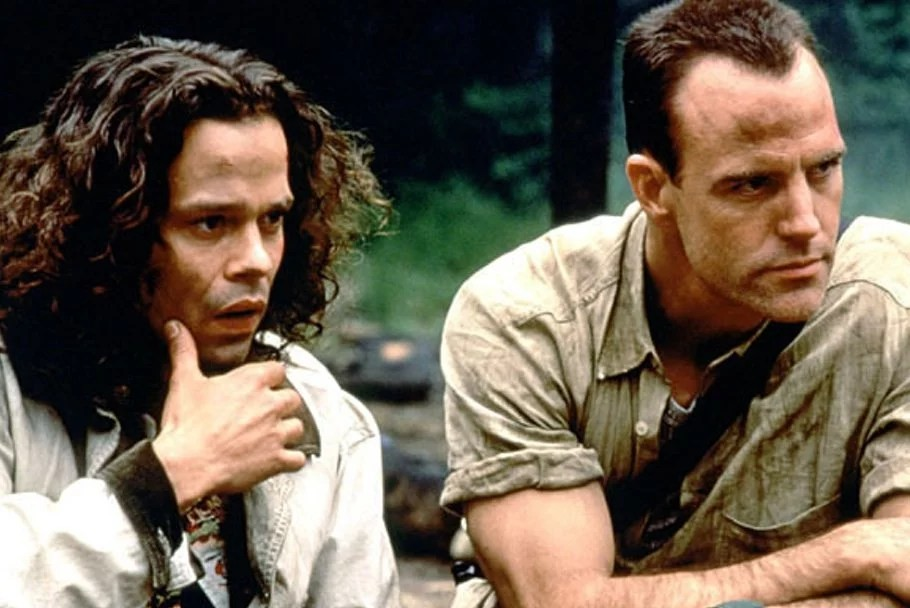
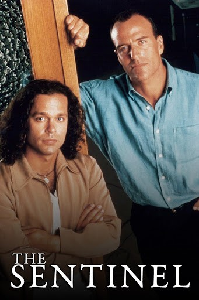
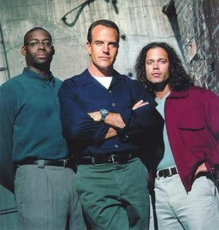

J'avais 13 ans quand The Sentinel passait tous les soirs de la semaine sur M6. C'était le rendez-vous qu'on ne manquait pas, avec mes parents, au moment de passer à table.
L'idée d'utiliser les cinq sens m'a tout de suite plu : une idée brillante. Richard Burgi incarnait Jim Ellison, avec un charisme impressionnant.
Je n'ai pas revu la série depuis, mais j'en garde un excellent souvenir. Je me souviens encore de son générique. Une voix expliquait que, dans toutes les cultures tribales, chaque village avait sa sentinelle, choisie pour son acuité sensorielle, développée bien au-delà des facultés humaines. Elle faisait le lien avec les mois que l'inspecteur Ellison avait passés dans la jungle du Pérou, et rappelait qu'on avait découvert des centaines de cas avec un ou deux sens hyper-développés, mais qu'aucun n'avait jamais montré un tel développement des cinq sens. Et elle finissait par : « Il est le seul. Il est unique. »
Ce soir, on retrouve Jim Ellison.

The Sentinel, une scène de la série
The Sentinel est une série policière américaine créée par Danny Bilson et Paul De Meo. Elle est diffusée sur le réseau UPN du 20 mars 1996 au 24 mai 1999, soit 4 saisons et 65 épisodes (10, 24, 23 puis 8 épisodes).
Le principe tient en une phrase. Jim Ellison, ancien Ranger de l'armée devenu inspecteur à Cascade, voit ses cinq sens se développer à un niveau hors norme. Blair Sandburg, un étudiant en anthropologie, comprend ce qui lui arrive : Jim est une « Sentinelle », un protecteur aux sens surdéveloppés. Blair devient son partenaire, et ils enquêtent ensemble.
Le duo est porté par Richard Burgi (Jim Ellison) et Garett Maggart (Blair Sandburg). Autour d'eux, Bruce A. Young joue le capitaine Simon Banks, Kelly Curtis le lieutenant Carolyn Plummer (saison 1) et Anna Galvin Megan Connor. La production est signée Pet Fly Productions et Paramount Network Television. Le thème est de James Newton Howard, et Steve Porcaro est crédité à la composition.
En France, la série est passée sur M6 sous son titre original.
The Sentinel naît chez Pet Fly Productions, la société de Danny Bilson et Paul De Meo, qui se sont rencontrés à l'université d'État de Californie à San Bernardino. Le duo a déjà derrière lui The Flash (1990-1991), première version télévisée du héros, et le scénario de The Rocketeer (1991). Il a aussi écrit Trancers et Zone Troopers et créé Viper. Bilson et De Meo créent la série, l'écrivent et la produisent en exécutif, avec Gail Morgan Hickman à la production.
La série est une coproduction avec Paramount Network Television, créditée États-Unis et Canada. Les épisodes durent environ 45 minutes. Son thème est de James Newton Howard, la musique de Steve Porcaro. Elle démarre le 20 mars 1996 sur UPN avec une première saison courte de 10 épisodes, puis des saisons de 24 et 23 épisodes.
En mai 1998, après trois saisons, l'annulation est annoncée. La saison 3 se termine sur un cliffhanger : la vie de Blair est en jeu. Une campagne de fans, avec des lettres de protestation envoyées à Paramount et UPN, fait changer la chaîne d'avis. En juillet 1998, UPN commande une quatrième saison de 8 épisodes pour conclure. Le tournage reprend à Vancouver le 26 août 1998, et la saison revient à l'écran début 1999. Le dernier épisode est diffusé le 24 mai 1999. Danny Bilson attribue aux fans une grande part du mérite de ce retour.

The Sentinel, le visuel de la série
Jim Ellison est capitaine des forces spéciales de l'armée américaine. Une équipe de reconnaissance le retrouve au Pérou, seul survivant d'un accident d'avion. Cinq ans plus tard, il est inspecteur de police à Cascade. Mais la jungle l'a changé : ses cinq sens sont désormais hyper-développés. Voir un détail à des centaines de mètres, entendre un cœur battre dans la pièce voisine, sentir une odeur qui disparaît pour tout autre nez : c'est une force. C'est aussi un danger. Un bruit trop fort, une odeur trop violente, et Jim peut se retrouver paralysé.
Le pilote, « The Switchman », le lance sur la piste d'un poseur de bombes. C'est là qu'il croise Blair Sandburg, étudiant en anthropologie. Blair comprend ce qu'est Jim et propose de l'aider à contrôler ses sens avant que d'autres innocents ne paient.
Dès lors, la série suit un schéma de binôme. Jim fait parler ses sens sur le terrain, Blair apporte la méthode et une approche plus humaine. Chaque épisode est une enquête, avec le capitaine Banks comme garde-fou. Le secret de Jim est au cœur du récit : il hésite à le révéler. Dans le deuxième épisode, « Siege », il doit choisir entre en parler à Banks ou agir seul.
Un buddy-cop avec une idée de départ. La série emprunte la forme du duo policier : un flic de terrain et un partenaire qui n'est pas du métier. Elle y ajoute une couche fantastique, avec des sens surdéveloppés, un peu de mysticisme et des esprits-animaux. Des fans y lisent aussi du New Age et du multiculturalisme.
Le mythe de la Sentinelle. C'est la trouvaille de la série. Dans les tribus anciennes, les sentinelles protégeaient leur village grâce à leurs sens, et leurs partenaires étaient appelés des « guides ». Blair étudie cette mythologie depuis des années sans avoir jamais trouvé de Sentinelle aux cinq sens. Jim est la première. La série s'appuie sur une monographie de Sir Richard Francis Burton, qui devient la base de la thèse de Blair. Jim, lui, voit Cascade comme sa « tribu » à protéger. C'est ce qui donne à chaque enquête une portée plus symbolique.
Un couple qui tient la série. Blair est présenté comme le « Guide » de Jim dès l'épisode 7 de la saison 1, et les fans en tireront la formule « Sentinel and Guide ». Même un fan critique juge l'écriture « médiocre » mais reconnaît que l'entente des deux héros attire le public. Les rôles sont clairs. Jim est le physique, le contrôle de soi et la peur de perdre le contrôle. Blair est le savoir, la parole et la confiance.
Un fandom très actif. Les premières fanfictions apparaissent en juillet 1996, quelques mois après la première diffusion. Il y a des listes de diffusion dès fin 1996, des conventions (Sentinel '98, SentiCon de 2000 à 2006) et des fanzines. Le fandom invente aussi les « saisons virtuelles ». Cette énergie nourrit la campagne « Support Our Sentinel », qui aide à obtenir la saison 4.
Survie en vidéo. L'intégrale de la saison 1 sort en DVD chez CBS en 2006, aujourd'hui épuisée, et l'intégrale de la série en 2015.

The Sentinel, photo de la série
Une chaîne jeune et un démarrage discret. La série débute en 1996 sur UPN, un réseau alors à sa deuxième année d'existence. Elle n'a pas l'aura d'un network installé comme NBC ou CBS. Elle est annulée après trois saisons, puis ressuscitée pour huit épisodes de conclusion. Elle s'arrête le 24 mai 1999, sans suite annoncée à ce jour.
Une édition vidéo tardive et mince. La saison 1 ne sort en DVD qu'en 2006 chez CBS DVD, puis le coffret est épuisé. L'intégrale arrive en 2015 chez Visual Entertainment. Le DVD de 2006 ne comporte aucun bonus. Un critique note alors un rythme « poussif » et des clichés récurrents, et le déclare « achat optionnel ».
Un souvenir qui s'est replié sur les fans. La série n'est pas oubliée de tous : le fandom reste très actif, avec archives, conventions et fanzines. Mais c'est là qu'elle a surtout continué à vivre.
En France. Elle est passée sur M6, mais je n'ai trouvé ni date de rediffusion récente, ni disponibilité actuelle en streaming ou en DVD français. Le seul témoignage que je puisse offrir ici, c'est mon souvenir : tous les soirs, en famille.
Pour le duo. Même un fan critique de l'écriture reconnaît que ce sont Jim et Blair qui font tenir la série. Richard Burgi y joue Jim Ellison et Garett Maggart Blair Sandburg. C'est ce que je retiens moi aussi : le charisme de Burgi, et une idée qui m'a plu tout de suite.
Pour son idée de départ. Cinq sens poussés au maximum, un mythe de « Sentinelle » emprunté aux tribus, et un partenaire qui connaît ce mythe. Les premiers épisodes le montrent : dans le pilote « The Switchman », Jim traque un poseur de bombes et apprend à contrôler ses sens. Dans « Killers », il perd temporairement le contrôle de certains d'entre eux.
Pour l'histoire de son sauvetage. La série est annulée après trois saisons, finit sur le cliffhanger de la vie de Blair, puis revient pour huit épisodes grâce à une campagne de fans. Ils ont écrit à Paramount et à UPN, acheté des pubs dans la presse du métier et même financé une bourse d'anthropologie. Revoir la série, c'est aussi voir ce que la fidélité d'un public a pu obtenir.
Pour sa conclusion. La saison 4 s'achève le 24 mai 1999 sur « The Sentinel by Blair Sandburg ». La série a donc une vraie fin, et non un arrêt brutal.
Pour la retrouver telle quelle. Une série de 65 épisodes, sortie en intégrale DVD en 2015 aux États-Unis, qu'on peut revoir dans l'ordre, sans suite à rattraper.
The Sentinel n'est pas la série la plus célèbre des années 90, et elle n'a jamais prétendu l'être. Elle tient à peu de chose : un inspecteur aux cinq sens poussés au-delà de l'humain, un étudiant qui sait ce que cela veut dire, et deux acteurs, Richard Burgi et Garett Maggart, qui ont fait vivre ce duo pendant 65 épisodes.
Elle a été annulée, puis sauvée par ses fans. Elle a eu droit à une vraie fin. Et pour beaucoup d'entre nous, elle reste liée à un moment précis : une heure de soirée, une famille autour de la table, et une voix qui annonce que Jim Ellison est le seul, qu'il est unique.
Elle ne se trouve plus facilement, et c'est une raison de plus d'en parler ici. Si vous l'avez vue à l'époque, racontez-moi votre souvenir par mail. Et si vous ne l'avez jamais vue, laissez-lui une soirée.
La cassette est dans le lecteur. On rembobine.
Titre original
The Sentinel
Pays
États-Unis
Genre
Policier · Fantastique
Diffusion
UPN, 1996–1999 (4 saisons, 65 épisodes)
Créateur
Danny Bilson · Paul De Meo
Production
Pet Fly Productions · Paramount Network Television
Musique
James Newton Howard (thème) · Steve Porcaro
Fil conducteur
Séries TV cultes — EP. 15
SOMEDAY — SÉRIES EP. 15